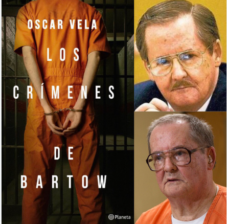
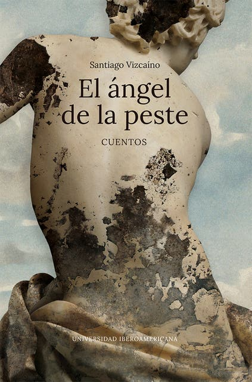
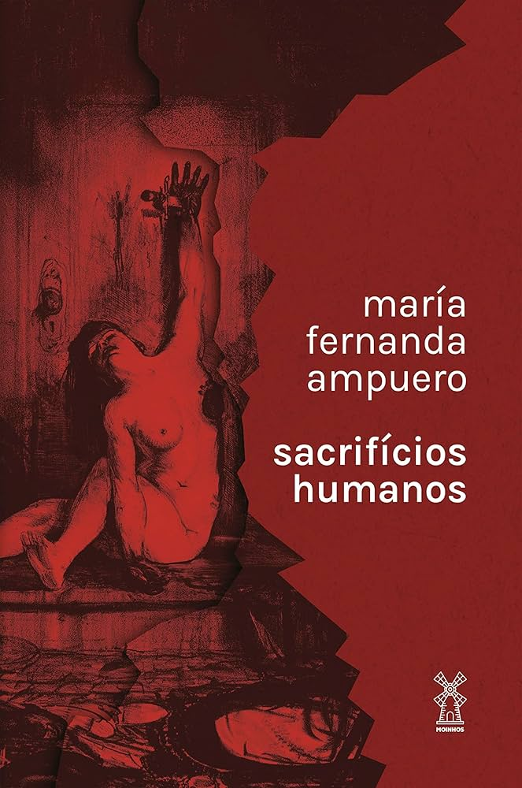

Reseñas de Libros
Descubre nuestras recomendaciones literarias:
Los crimenes de Bartow (Novela)
Es una historia a modo de reportaje en la que el escritor termina convirtiéndose en uno de los abogados del sentenciado, transformando al libro en un alegato tal cual lo hiciera Émile Zola a favor de Alfred Dreyfus.
El Àgel de la peste (Cuentos)
Es un abanico de situaciones tragicómicas en medio del caos, para descubrir esos escenarios que vivimos o que viven en nuestra mente en medio del encierro.
Sacrificios Humanos (Cuentos)
Tras leer este libro uno camina al espejo y se pregunta ¿quién es el monstruo? Se trata de cuentos crudos, y nos volvemos caníbales al devorarlos. Cada historia golpea como un viento helado que curte la cara y el alma para alertarnos sobre la violencia.